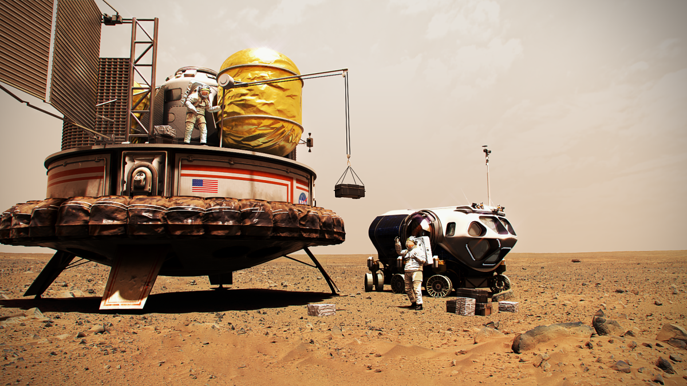
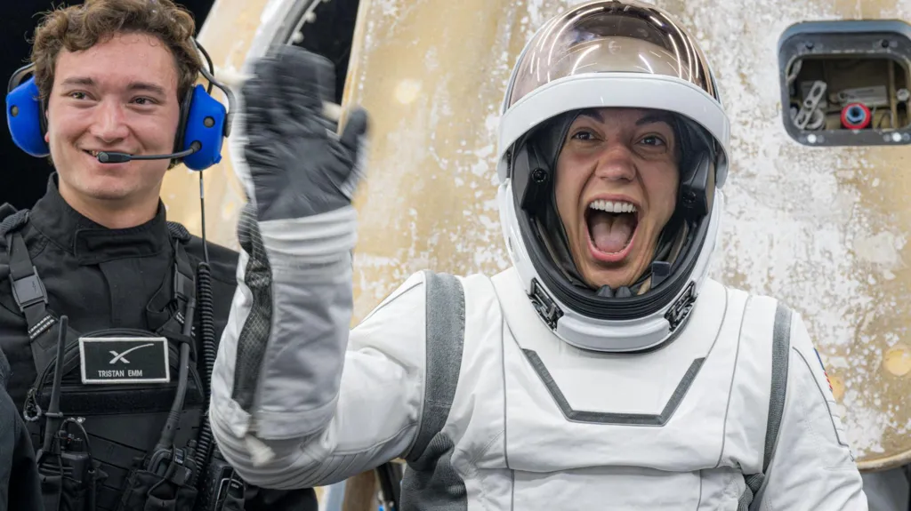
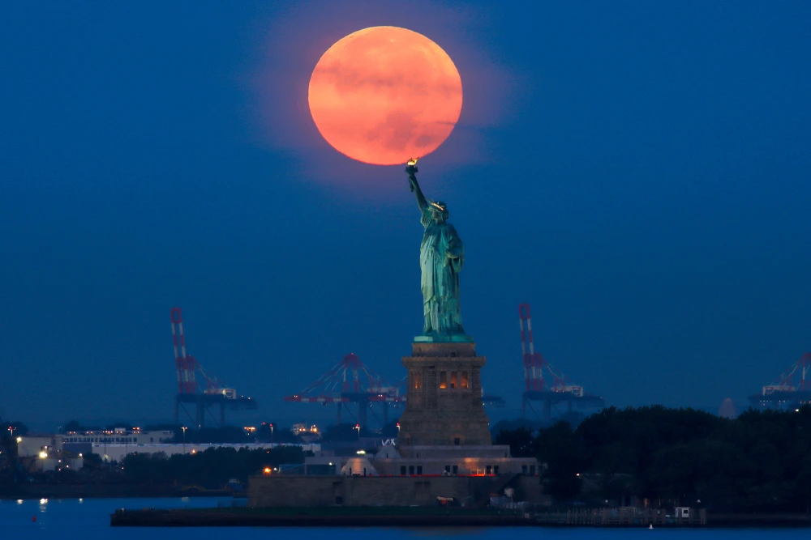
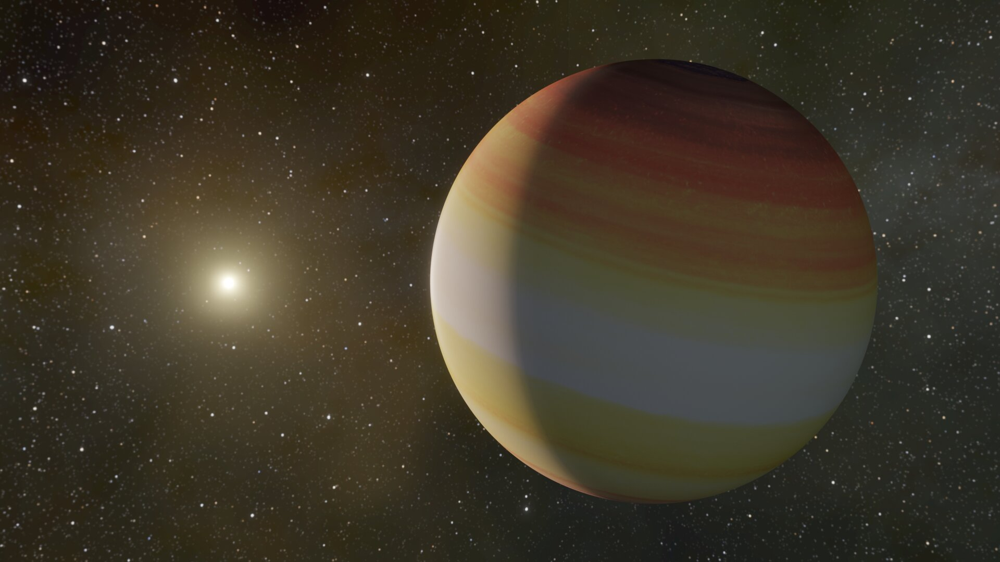

Human To Mars
Mars remains our horizon goal for human exploration because it is one of the only other places we know where life may have existed in the solar system. What we learn about the Red Planet will tell us more about our Earth’s past and future, and may help answer whether life exists beyond our home planet.

First Commercial Spacewalk
The four-member civilian team, bankrolled and led by billionaire Jared Isaacman, travelled further into space than any humans for more than fifty years. SpaceX's Polaris Dawn crew has returned to Earth after five days in orbit, following a historic mission featuring the world's first commercial spacewalk.

Supermoon Eclipse
A full moon on Tuesday will coincide with a partial lunar eclipse, giving people in North America, South America, Africa, and Europe a chance to see part of the moon’s surface obscured by Earth’s shadow. The eclipse will peak at 10:44 p.m. When roughly 8% of the moon’s surface will be in full shadow. This will come about 10 minutes after the moon becomes full at 10:35 p.m.

New Planet Discovered
Astronomers from the Nicolaus Copernicus University in Torun have discovered a new planet in the Great Bear constellation. It has a mass up to 11 times that of Jupiter, orbits its star in 14 years, and has a temperature of no more than minus 100 degrees Celsius.